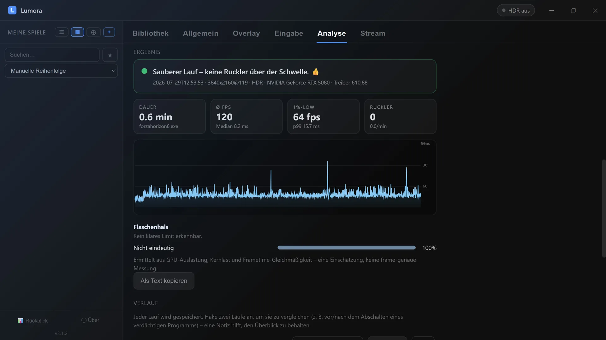

Warum ruckelt mein Spiel? Lumora sagt dir, wer schuld ist.
Teure GPU, schneller Prozessor – und trotzdem diese kurzen, zufälligen Aussetzer, die beim Rennen oder im Gefecht jedes Mal nerven. Ruckler, Micro-Stutter, Lags, Frametime-Spikes: Wie auch immer du es nennst, der Task-Manager zeigt nichts und die Auslastung ist niedrig. Lumora misst genau in diesen Millisekunden mit und benennt die wahrscheinlichen Verursacher – kostenlos, ohne Zusatztools.
⬇ Lumora kostenlos ladenFür Windows 10 & 11 · NVIDIA, AMD & Intel · Open Source

Der Bericht nach einer Messung: Klartext-Urteil, Kennzahlen, Frametime-Kurve und Flaschenhals-Einschätzung.
So läuft eine Analyse ab
- 1. Messung starten – per Tastenkürzel mitten im Spiel oder mit einem Klick in Lumora.
- 2. Normal weiterspielen – ein Mess-Overlay zeigt live den Frametime-Verlauf, den Stutter-Counter und bei jedem Treffer sofort den ersten Verdacht.
- 3. Messung beenden – der Bericht erscheint als Klartext-Urteil mit Kurve, Kennzahlen und Verdächtigen-Liste.
Was am Ende dabei herauskommt
Kein Zahlenfriedhof und kein Log zum Selberdeuten, sondern ein Satz, den man versteht – zum Beispiel:
Auch das letzte Ergebnis ist ein Ergebnis: Es erspart dir die Suche nach einem Schuldigen, den es außerhalb des Spiels gar nicht gibt.
Wonach Lumora sucht
- Background-Tasks, die genau im Stutter-Moment CPU-Zeit ziehen – Virenscanner, Update-Dienste, Overlay- und RGB-Software, Cloud-Sync.
- Treiber mit Latenz-Spikes (DPC/ISR) – mit Dateinamen, etwa Grafik-, WLAN- oder Audiotreiber. Das ist die Disziplin, für die man sonst Spezialwerkzeuge wie LatencyMon braucht.
- GPU-Throttling – Takteinbruch durch Power- oder Temperature-Limit, inklusive ausgelesener Ursache (bei NVIDIA-Karten).
- Volllaufendes VRAM – wenn Texturen in den langsameren Arbeitsspeicher ausgelagert werden und die Frametimes einbrechen.
- Flaschenhals-Badge – ob gerade eher die Grafikkarte, ein einzelner CPU-Kern oder ein FPS-Limiter/VSync das Tempo vorgibt, live im Overlay und als Verteilung im Bericht.
- Storage-Zugriffe – Ladeschübe und lange Antwortzeiten der SSD oder Festplatte.
- Frisch gestartete Programme – der Klassiker, der im Nachhinein niemandem mehr einfällt.
Vorher und nachher vergleichen (A/B-Test für dein System)
Der eigentliche Nutzen entsteht beim zweiten Run: Verdächtigen abschalten, erneut messen, beide Läufe nebeneinanderlegen. Lumora speichert jede Session mit Spiel, Auflösung, Refresh-Rate und Treiberversion und rechnet den Unterschied aus – „Lauf B: 80 % weniger Stutter als Lauf A". Neben der Stutter-Rate stehen die üblichen Benchmark-Kennzahlen: durchschnittliche FPS, 1 % Lows und Median-Frametime. Zu jedem Lauf lässt sich eine Notiz hinterlegen, damit auch nach Tagen klar bleibt, was zwischen den Messungen geändert wurde.
Ehrlich bleiben: Was die Analyse leisten kann – und was nicht
Lumora liefert begründete Verdachtsmomente, keine Beweise. Dass ein Prozess im Stutter-Moment auffällig war, macht ihn zum plausiblen Verursacher – deshalb zählen wir mit, in wie vielen Fällen er auftrat: Ein Treffer bei 8 von 10 Rucklern ist ein Muster, einer bei 1 von 10 ist Zufall. Diese Zahl steht bewusst in jedem Report.
Ebenso ehrlich: Ursachen innerhalb des Spiels – Shader-Compilation, Streaming von Spielwelt-Daten, das berüchtigte Traversal-Stutter in großen Open-World-Titeln – lassen sich von außen nicht bis zur Codezeile aufklären. Lumora erkennt sie aber als solche und sagt es klar, statt einen unschuldigen Prozess zu beschuldigen.
Und noch eine Abgrenzung, weil die Begriffe oft durcheinandergehen: Hier geht es um Frametime-Probleme auf deinem eigenen Rechner – nicht um Netzwerk-Lag oder Ping im Online-Match. Wenn dein Bild lokal stockt, obwohl die Verbindung sauber ist, bist du hier richtig.
Kostet praktisch keine Performance
Gemessen wird über die in Windows eingebaute Ereignisverfolgung (ETW) – dieselbe Grundlage, die auch professionelle Analyse-Tools nutzen. Das Auslesen läuft mit niedriger Priorität und ist auf unter ein Prozent CPU-Last ausgelegt; ein eingebauter Watchdog schaltet die teuerste Messstufe automatisch ab, falls sie doch einmal darüber liegt. Läuft keine Session, entsteht überhaupt keine Last. Zusätzliche Treiber werden nicht installiert.
Wie empfindlich soll gemessen werden?
Nicht jeder kleine Frametime-Ausreißer ist ein spürbarer Ruckler. In den Einstellungen wählst du zwischen drei Stufen: Empfindlich meldet auch kleine Spikes, Normal beschränkt sich auf fühlbare Hitches, Nur harte Ruckler auf deutliche Freezes. So findest du entweder jede Unregelmäßigkeit oder gezielt die Momente, die dir beim Zocken wirklich aufgefallen sind.
Häufige Fragen
Warum ruckelt mein Spiel, obwohl die Hardware stark genug ist?
Micro-Stutter entsteht selten aus Mangel an Rechenleistung. Typische Ursachen sind Background-Tasks, die kurz die CPU belegen, Treiber mit hohen DPC-Latenzen, kurzzeitiges GPU-Throttling oder Nachladevorgänge im Spiel selbst. Im Task-Manager sind solche Aussetzer meist unsichtbar, weil sie nur Millisekunden dauern.
Erkennt Lumora auch ein CPU- oder GPU-Bottleneck?
Ja: Ein Badge im Mess-Overlay und eine Verteilung im Bericht zeigen, was gerade das Tempo vorgibt – GPU-Limit, CPU-Limit, Einzelkern-Limit, ein FPS-Limiter/VSync, GPU-Throttling (Takteinbruch durch Power- oder Temperature-Limit, mit ausgelesener Ursache bei NVIDIA) oder volllaufendes VRAM. Ermittelt wird das jede Sekunde aus GPU-Auslastung, Kernlast und der Gleichmäßigkeit der Frametimes – eine Einschätzung, keine frame-genaue Messung. Bleibt das Bild uneindeutig, steht dort ehrlich „nicht eindeutig" statt einer geratenen Antwort.
Was sind DPC-Latenzen und warum verursachen sie Stutter?
DPCs sind kurze Aufgaben, die Treiber im Windows-Kernel ausführen – etwa für Netzwerk, Audio oder Grafik. Dauert so ein Aufruf zu lange, wartet alles andere, auch dein Spiel; spürbar als Freeze oder Micro-Stutter. Lumora liest diese Events mit und zeigt die verantwortliche Treiberdatei beim Namen, zum Beispiel nvlddmkm.sys oder einen WLAN-Treiber. Genau dafür greift man sonst zu Spezial-Tools wie LatencyMon.
Kostet die Messung selbst Performance?
Nein, spürbar nicht: Die Session ist auf unter ein Prozent CPU-Last ausgelegt und läuft nur, solange du sie startest. Läuft keine Messung, entsteht keinerlei Last – deine FPS bleiben unangetastet.
Brauche ich zusätzliche Treiber oder Fremdprogramme?
Nein. Die Analyse nutzt ausschließlich Bordmittel von Windows. Für den Zugriff auf die Messdaten sind Administratorrechte nötig – die Einrichtung erfolgt einmalig mit einer einzigen Bestätigung, danach läuft alles ohne weitere Nachfragen.
Und nebenbei…
Lumora ist vor allem ein Game-Launcher: alle Spiele aus Steam, Epic, GOG, Xbox, EA & Co. in einer Cover-Library, automatisches HDR pro Spiel, ein Gaming-OSD mit FPS und Hardware-Monitoring und Game-Streaming in bis zu 4K an den Browser deiner Freunde. Die Ruckler-Analyse ist einer von vielen Bausteinen – und sie kostet dich keinen Cent.
Mehr von Lumora
FPS & Hardware-Werte im Spiel anzeigen →
Gameplay in 4K mit Freunden teilen →
Den ganzen Launcher per Gamepad bedienen →